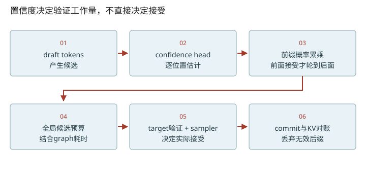
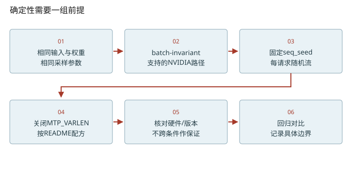

深入篇 32 / DeepInfer 专项精读 · 2026-11-08
DSpark：验证预算、接受前缀与可复现边界
从逐位置置信度算累计接受率，再解释验证预算、KV回退与确定性条件。
从逐位置置信度算累计接受率，再解释验证预算、KV回退与确定性条件。

为什么先把confidence累乘
A的raw confidence=[0.9,0.5]，B=[0.8,0.25]。接受到第二个draft必须先接受第一个，所以累计前缀接受率为A=[0.9,0.45]、B=[0.8,0.2]。源码用accept_rate *= confidence_data保存这类量。全局排序是A1、B1、A2、B2；这用来估计多验证一个位置的收益，不是用confidence阈值直接判定输出合法。
预算为什么会在图分桶处跳变
人为设图大小/耗时为(2,1ms)、(4,1.2ms)、(6,2ms)，sampler成本和slope暂为0。两个请求各保留1个基础token，总query候选2…6的期望输出分别为2、2.9、3.7、4.15、4.35；预计token/ms为2、2.417、3.083、2.075、2.175，所以选择总query=4，每请求query=2。多验证第三个draft让图桶从4跳6，反而不划算。这是教学曲线，不是GPU实测。
真实MTPVarlen使用profile与反馈估计耗时，并在候选中最大化预计有效输出/预计耗时。为了保持算法约束，它用N−2轮信息选总预算，用N−1信息分配每请求长度，ZOS时GPU还会修正；不能简写成“当前confidence高于固定阈值就接受”。
回退修的是有效边界
之前cache=100、已提交长度101，本轮q=4，乐观cache=104。如果只接受1个draft再采样1个token，实际提交2，修正cache=102，总长度103。拒绝后缀的物理内存可以残留数值，但不能作为合法历史读取；也不能把未验证草稿发给用户。通用投机协议的accepted prefix + 替代/bonus token与具体采样分布校正要分开讲。
SWA bounded replay有明确限定
部署QA把YOCO consumer层的bounded replay描述为近似重建SWA缓存。compact移除早期query，mask保留query但限制可见域；模式默认off，keep默认0。140是README对特定V4.1设置给出的启用示例，不是环境变量默认值；保留后缀至少覆盖window+max_backtracking。它减少prefill工作，不能自动称为与完整重放严格等价。
固定seed还不够
本地README给NVIDIA确定性采样的配方：DEEPINFER_BATCH_INVARIANT=1，DEEPINFER_ENABLE_MTP_VARLEN=0，并显式固定SamplingParams.seq_seed。默认seq_seed可能随机生成。batch invariance、固定随机流、理论分布正确性是三个不同问题。是否需要逐位相同取决于回归/评估目标，不能从存在浮点差异直接推出训练梯度错误。

改变变量，验证直觉
启用 JavaScript 后可交互；上面的图和下面的手算练习始终可读。
数值练习：先算，再核对
运行 python labs/inference_lab.py spec，重现正文人为曲线的预算选择。然后把图6的耗时从2ms改为1.3ms，预测最优预算如何变化；这是算法直觉练习，不是性能承诺。
闭卷检索
不要回看正文。答错后先解释原因，再重新打开这一课。
把结论落到源码
- 在MTPVarlen找cur_expected、time_ms、best_bsz以及两组confidence队列，解释为何分两种历史。
- 对照advance_optimistically与commit_processed_tokens推导cache=102的例子。
- 在README与environ.py核对“推荐启用值”和“变量默认值”的区别。
以下行号由本地 vendor 文件生成；上游链接固定完整 commit，离线摘录可直接打开。
- deepinfer-confidence：deepinfer/model_executor/models/mtp/dflash.py L46–79 · 上游证据
- deepinfer-accept-rates：csrc/engine/scheduler.hpp L1239–1250 · 上游证据
- deepinfer-mtp-schedule：csrc/engine/mtp_varlen.hpp L139–266 · 上游证据
- deepinfer-commit：csrc/engine/scheduler.hpp L899–1003 · 上游证据
- deepinfer-cache-counter：csrc/engine/sequence.hpp L210–221 · 上游证据
- deepinfer-swa：doc/inference_deployment_qa.md L235–245 · 上游证据
- deepinfer-swa-config：deepinfer/environ.py L194–204 · 上游证据
- deepinfer-scope：README.md L3–52 · 上游证据
- deepinfer-seed：deepinfer/sampling_params.py L85–93 · 上游证据
优先阅读：固定源码 MTPVarlen 与 部署QA中的SWA说明。
速查：形状与公式 · 三框架映射 · 术语表 · 复习与实战路线 · 4070 Ti本地实验
只在当前浏览器保存自评；不会自动写成已掌握的 learning record。